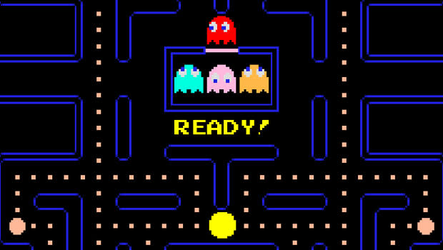
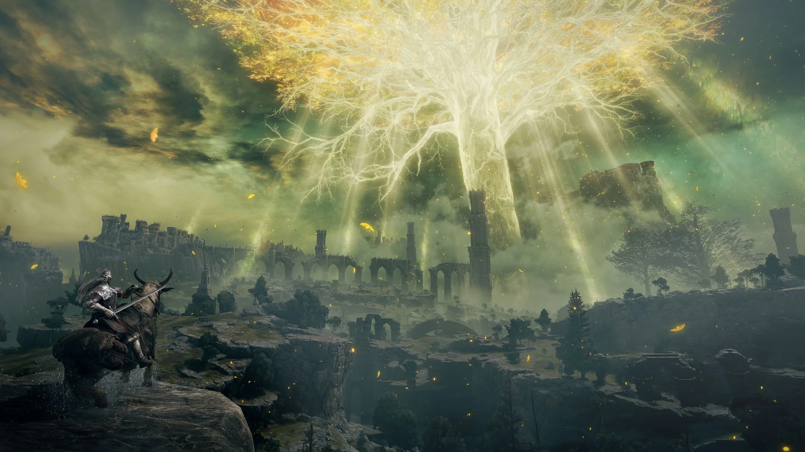
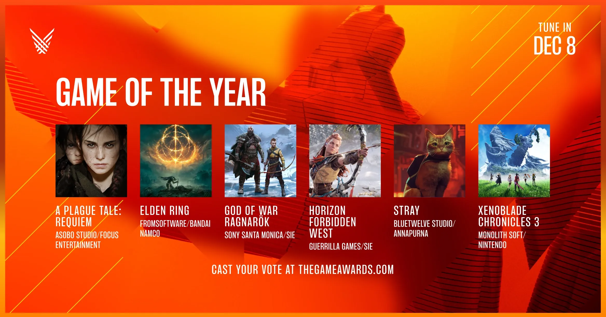

Istoria timpurie (1948-1970) si anii 70'
Încă din 1950, informaticienii au folosit mașini electronice pentru a construi sisteme de joc relativ simple, cum ar fi Bertie the Brain în 1950 pentru a juca X și 0 sau Nimrod(d) în 1951 pentru a juca Nim(d). Aceste sisteme....

Anii 1980
Industria jocurilor video a cunoscut primele încetiniri majore de creștere la începutul anilor 1980; atractivitatea pieței a făcut ca multe companii cu puțină experiență să încerce să valorifice jocurile video - ceea ce a contribuit la prăbușirea industriei din 1983...

Anii 1990
Aenean ornare velit lacus, ac varius enim lorem ullamcorper dolore. Proin aliquam facilisis ante interdum. Sed nulla amet lorem feugiat tempus aliquam.

Anii 2000
Aenean ornare velit lacus, ac varius enim lorem ullamcorper dolore. Proin aliquam facilisis ante interdum. Sed nulla amet lorem feugiat tempus aliquam.

Perioada din 2010 pana in prezent
Aenean ornare velit lacus, ac varius enim lorem ullamcorper dolore. Proin aliquam facilisis ante interdum. Sed nulla amet lorem feugiat tempus aliquam.

Scurta prezentare a celor mai importante
jocuri din fiecare perioada
Aenean ornare velit lacus, ac varius enim lorem ullamcorper dolore. Proin aliquam facilisis ante interdum. Sed nulla amet lorem feugiat tempus aliquam.